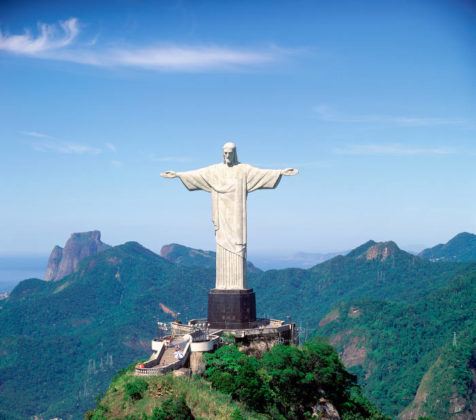
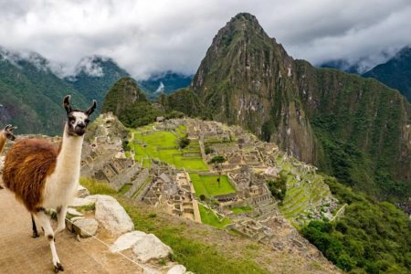

Statue du Christ Rédempteur
La Statue du Christ Rédempteur se trouve au sommet du mont Corcovado à Rio de Janeiro et est l'emblème du Brésil.
Elle mesure 38 mètres de haut et pèse 1145 tonnes, c'est une colossale sculpture religieuse. C'est un monument beaucoup moins ancient que les deux premiers car il a été inaugurée en 1931 après 5 ans de construction.
C'est l'un dse endroits les plus touristiques de Rio car il reçoit 75000 visiteurs chaque année.
Cette statue a fais l'objet de nombreuses vandalisation dont les tags et les grafittis sui ont été qualifié de "crime contre la nation" par le maire de la ville. Mais elle aussi endommagé par la foudre qui la touche en moyenne 6 fois par an et a donc fais l'objet de rénovation régulieres afin de la garder en bonne état.
Bonne Vacance !
Je trouve que la Statue du Christ Rédempteur sois Rio est une bonne destination pour partir en vacances et découvrir en même temps une des merveilles du monde car la statue elle-même se trouve à côté d'une plage et vous permettra de vous y baigner même si il ne faut pas avoir peur de la foule car c'est un endroit très prisé. Cela vous permettra aussi de partir à l'étranger et de visiter une grande ville comme Rio !
Machu Picchu
Le Machu Picchu se trouve au Pérou et est perchée a 2438m au sommet d'une montagne entre les Andes et la forêt Amazonienne. Cette cité est un grand mystère car les historiens se questionne encore aujourd'hui de ces origines. Ce serais un monument surexposé même si le vue et l'endroit oû elle se trouve est assez incroyable et magnifique.
Amateur de nature !
Je trouve que ce monument offre un paysage magnifique et naturel en cachant bien des mystères. Si vous aimez la nature et que vous êtes friant des découvertes de ruines mystérieuses et renfermant une histoire biens secrète c'est une bonne destination car elle rassemble tous les critères même si étant classé dans les 7 merveilles du monde beaucoup de visiteurs viennent la voir il est toujours excitant d'en apprendre plus sur le passé de cité mystère !